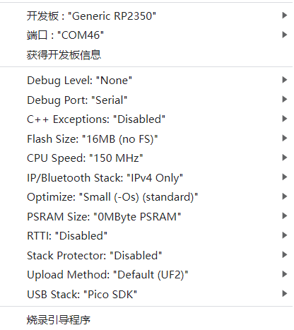

English
EnglishLILYGO T-PICO-2350

Version History:
| Version | Update Date | Update Description |
|---|---|---|
| T-PICO-2350_V1.2 | 2024-01-01 | Initial version |
Purchase Links
| Product | Main SOC | Wireless SOC | Flash | Link |
|---|---|---|---|---|
| T-PICO-2350 | RP2350 | ESP32-C6 | 16MB + 4MB | LILYGO Mall |
Table of Contents
- Description
- Preview
- Modules
- Quick Start
- Pin Overview
- Related Tests
- FAQ
- Projects
- Resources
- Dependent Libraries
Description
The T-PICO-2350 is another version in the T-Pico series based on the Raspberry Pi RP2350 chip, manufactured with the external expansion version shell design of T-Display S3 Pro. This shell design features multiple external function expansion interfaces, supporting both pin header expansion mode and 13-pin 0.3mm pitch FPC expansion interface mode, while the bottom has multiple M1.4 embedded copper nuts for bottom expansion fixation. It integrates RP2350 + ESP32-C6 + 2.33-inch capacitive touch screen + TF card + HDMI interface + 2 QWIIC interfaces + PMU, supports battery power and USB power, and continues the T-Pico series design with reversible USB connection for programming both chips.
Preview
Physical Image

Pinout Diagram

Modules
Main Processor (RP2350)
- Chip: Raspberry Pi RP2350
- Flash: 16MB
- SRAM: 520kB
- Other Notes: For more information, please visit Raspberry Pi RP2350 Documentation
Wireless Co-processor (ESP32-C6)
- Chip: ESP32-C6-MINI-1U-N4
- Flash: 4MB
- Wireless Protocol: 2.4G WiFi 6 + Bluetooth (BLE)
- Wireless Standard: 802.11b/g/n
Display
- Size: 2.33-inch IPS LCD
- Driver IC: ST7796S
- Bus Communication Protocol: SPI
Touch
- Chip: XL9535
- Bus Communication Protocol: I2C
Expansion Interfaces
- HDMI: 19-pin HDMI interface
- QWIIC: 2 × QWIIC interfaces
- IO Interface: 2×13 expansion IO interface
- FPC Interface: 13-pin 0.3mm pitch FPC expansion interface
Overview
| Component | Description |
|---|---|
| Main Processor | RP2350 |
| Wireless Co-processor | ESP32-C6-MINI-1U-N4 |
| Flash | 16MB (RP2350) + 4MB (ESP32-C6) |
| SRAM | 520kB (RP2350) |
| Display | 2.33-inch IPS LCD |
| Touch | XL9535 I2C Capacitive Touch |
| Storage | TF card |
| Video Output | HDMI interface |
| Wireless | WiFi 6 + BLE (ESP32-C6) |
| Expansion Interface | 2×13 IO + 2×QWIIC + FPC |
| Power Management | Integrated PMU |
| Power Supply | Battery power + USB power |
| Mounting Holes | 4 × M1.4mm |
| Programming Interface | Reversible USB for programming both chips |
Quick Start
Example Support
| Example | PlatformIO/Arduino | C/C++ | Description |
|---|---|---|---|
| Factory | ✓ | ✓ | Factory example |
| (More examples please refer to the GitHub repository) |
- For more RP2040 or RP2350 chip function examples, please refer to arduino-pico-libraries
- For more ESP32-C6 chip function examples, please refer to arduino-esp32-libraries
- ESP32-C6 AT Command Set
New User Guide
- For first-time use, you need to use Zadig to replace the driver for correct port recognition.
T-PicoProuses a reversible Type-C design, corresponding to the RP2350 port and ESP32-C6 USB port respectively.- How to identify the RP2350 port?
- Hold the BOOT button on the side of
T-PicoPro, then plug in the USB-C. If the computer recognizes it as a disk, then this is the RP2350 port.
- Hold the BOOT button on the side of
- Besides being used as UART, the
QWIICUART port of T-PicoPro can also be used as general IO. - The
QWIICI2C port cannot be used for other purposes and can only be configured as an I2C interface, as it is connected to the screen touch and PMU. - ESP32C6 uses modified AT firmware with
TX and RX swapped. You can find the custom compilation method for AT firmware here. - ESP32-C6 default AT firmware is compiled at
V3.3.0-dev. This firmware has been simply modified (added GPIO control function), source code can be found here, specific changes please see commit. - T-PicoPro charging indicator can be turned off via software. If no battery is connected, the indicator will flash.
PlatformIO Quick Start (Recommended)
- Install Visual Studio Code and Python
- Search for the
PlatformIOplugin inVisualStudioCodeextensions and install it - After installation, you need to restart
VisualStudioCode - After restarting
VisualStudioCode, selectFile->Open Folder-> select theT-PicoProdirectory - Wait for third-party dependency libraries to install
- Click on the
platformio.inifile, in theplatformiosection - Uncomment one of the
src_dir = xxxxlines, ensuring only one line is active - Click the (✔) symbol at the bottom left to compile
- Connect the development board to computer USB
- Click (→) to upload firmware
- Click (plug symbol) to monitor serial output
- If unable to write, or USB device keeps flashing, please check the FAQ below
Arduino IDE Quick Start
- PlatformIO is recommended to avoid cumbersome steps
- Install Arduino IDE
- Install Arduino Pico
- Download or clone
T-PicoProto any location - Copy all folders from the lib folder to the Arduino library folder (e.g., C:\Users\YourUsername\Documents\Arduino\libraries)
- Open ArduinoIDE,
Tools, select as shown in the image
 T-PicoProfolder ->examples->Any example- Select
Port - Click
Upload, wait for compilation and writing to complete - If unable to write, or USB device keeps flashing, please check the FAQ below
Pin Overview
XL9535 is the external expansion IO port for RP2350A.
| RP2350A | XL9535 | ESP32-C6 | TFT | SD | BUTTON | HDMI | QWIIC | UART1 | FLASH | DRAM | |
|---|---|---|---|---|---|---|---|---|---|---|---|
| IO0(SDA) | ↔ | PIN47(TP_SDA) | |||||||||
| IO1(SLC) | ↔ | PIN48(TP_SCL) | |||||||||
| IO2 | ↔ | SDA1 | |||||||||
| IO3 | ↔ | SCL1 | |||||||||
| IO2 | ↔ | PIN50(TP_RST) | |||||||||
| IO4 | ↔ | PIN49(TP_INT) | |||||||||
| IO0 | ↔ | PIN35(TF_RST) | |||||||||
| IO1 | ↔ | PIN35(TF_BL) | |||||||||
| IO4(MISO) | ↔ | PIN11 | SD_MISO | ||||||||
| IO6(SCK) | ↔ | PIN8 | SD_SCK | ||||||||
| IO7(MOSI) | ↔ | PIN10 | SD_MOSI | ||||||||
| IO8(TFT_CS) | ↔ | PIN6 | |||||||||
| IO9(TFT_DC) | ↔ | PIN7 | |||||||||
| IO5(SD_CS ) | ↔ | SD_CS | |||||||||
| IO12 | ↔ | CK_N | |||||||||
| IO13 | ↔ | CK_P | |||||||||
| IO14 | ↔ | D0_N | |||||||||
| IO15 | ↔ | D0_P | |||||||||
| IO16 | ↔ | D1_N | |||||||||
| IO17 | ↔ | D1_P | |||||||||
| IO18 | ↔ | D2_N | |||||||||
| IO19 | ↔ | D2_P | |||||||||
| IO6 | ↔ | HOTPLUGDET | |||||||||
| IO20(TX) | ↔ | RX | |||||||||
| IO21(RX) | ↔ | TX | |||||||||
| IO23 | ↔ | BTN1 | |||||||||
| IO22(RESERVE) | ↔ | IO10(RESERVE) | |||||||||
| IO3 | ↔ | IO8(EN) | |||||||||
| IO26(CTS) | ↔ | IO5(CTS) | |||||||||
| IO27(RTS) | ↔ | IO4(RTS) | |||||||||
| IO28(TX) | ↔ | IO6(RX) | |||||||||
| IO29(RX) | ↔ | IO7(TX) | |||||||||
| PIN55(SD3) | ↔ | IO3 | SIO3 | ||||||||
| PIN58(SD2) | ↔ | IO2 | SIO2 | ||||||||
| PIN59(SD1) | ↔ | IO1 | SIO1 | ||||||||
| PIN57(SD0) | ↔ | IO0 | SIO0 | ||||||||
| PIN56(SCLK) | ↔ | SCLK | SCLK | ||||||||
| PIN60(FLASH_CS) | ↔ | IO3 | |||||||||
| IO25(RAM_CS) | ↔ | CS | |||||||||
| (For detailed pin definitions, please refer to the schematic diagram) |
Related Tests
(Dual-core communication, power consumption, display performance test data to be added)
FAQ
If writing fails but shows success:
- Connect the development board via USB cable
- Press and hold the (side) BOOT button while pressing the (same side) RST button
- Release the (side) RST button
- Release the (side) BOOT button
- Upload the program
How to write to ESP32-C6?
- Since the
ESP32-C6reset pin is controlled byRP2350, when updatingESP32-C6firmware, do not include operations controlling theESP32-C6reset pin in theRP2350program. - Hold the esp32 BOOT button on the ESP32-C6 module side and plug in USB-C. Make sure to plug into the "ESP32-C6" USB port side. The computer should be able to write to "ESP32-C6" normally.
- Since the
How to check if hardware is normal?
- Please follow step 1 in FAQ, drag the
firmware.uf2from the firmware directory into the disk. The program includes hardware self-test to determine if the hardware is normal.
- Please follow step 1 in FAQ, drag the
Why is there no serial output?
- In arduino IDE, select
Debug Port: "Serial"in the toolbar. - Please open the
DTRoption in the serial assistant tool.
- In arduino IDE, select